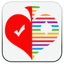
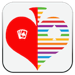
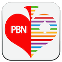

(1) iBridgeFun
Versions for iPad/iPhone and iMac.
The main idea of iBridgeFun is: SHOW you a lot of classic Hands played by the famous bridge masters with comments to illustrate the various techniques for you to improve your playing skills. ( It's NOT an on-line game)
iBridgeFun collected more than 1000 classic and good hands played by bridge masters, illustrating the various techniques, including safety play, removing play, block and unblock, killing defense, extra chance, Italy Blue team's up and downs etc, which covers all declarer and defense basic playing skills.
It's simply a portable bridge table that you can learn bridge technique, train yourselves, enjoy bridge master's skills at anytime and anywhere, and a perfect product for you to improve your playing skills.
If you go through all hands with a moment thinking, it would be a noticeable improvement in your playing skill.
Hope you become a very good player and have many iBridgeFun days.
Features:
1) Over one thousand hands, almost all are commented to improve your skills. Loads and displays all deals from text file off line.
2) Five modes: demo, train, manual, AI.
AI mode: you play both declarer and dummy, computer play defenders.
Demo mode: the whole playing process trick-by-trick demo.
Auto demo: when in Demo mode, auto demo the playing process, touching any effective key to stop auto demo.
Train mode: trick-by-trick play, a message box will appears which tells what about to play.
Manual mode: by touching the card on the table, you can replay the hands.
(2) iBridgeBest
Versions for iPad/iPhone and iMac.
iBridgeBest collects a lots of the best hands which includes:
1) The Best Played Hand of the Year (1974-2016)
2) The Best Defense of the Year(1985-2016)
3) The Best Play by a Junior(1996-2016)
4) The BOLS Brilliancy Prize(1977-1987)
5) The Best Play of the Year by a Woman(1985-1986)
6) 2011 Hand of the week (40 deals)
7) 2012 Hand of the week (40 deals)
8) 2013 Hand of the week (40 deals)
9) 2014 Hand of the week (42 deals)
(3) Bridge Exercises

Versions for iPad/iPhone and iMac.
Bridge Exercises offers tons of declarer play exercises for players of all skill levels to practice playing skills.
Level evaluation:
one star: Winning ratio less than 50%
two star: Winning ratio more than 50% and leas than 60%
three star: Winning ratio more than 60% and leas than 70%
three star: Winning ratio more than 70% and leas than 80%
five star: Winning ratio more than 80%
Functions:
Solution: show you one of the best plays of the hand,
Replay: you can replay the hand, but number of total played hands will not include the replayed hands.
A good bridge declarer relies on a variety of skills, strategies and techniques, Bridge Exercises help you practice more.
Tips for Bridge Exercises
Don't play to the first trick too quickly. Force yourself to stop and think.
Concentrate on the opening lead for a few seconds so you'll remember it later. Decide what it tells you about the leader's length or strength in that suit.
Review the bidding. If one of your opponents has bid, try to come up with a general picture of his point-count and his length in the suit bid.
Always count your losers and winners.
(4) iBridgeCup
Versions for iPad/iPhone and iMac.
iBridgeCup includes (Both Open and Close Room) :
1) 41th Bermuda Bowl
Final Section 1-6 MONACO VS ITALY
Final Section 1-4 POLAND VS USA1
2) 19th Venice Cup
Final Section 1-6 USA2 VS ENGLAND
Final Section 1-4 NETHERLANDS VS CHINA
3) 40th Bermuda Bowl
Quarter Final Section 2 ITALY VS CHINA
Quarter Final Section 3 ICELAND VS NETHERLANDS
Semifinal Section 1-2 USA2 VS USA1
Semifinal Section 3-4 NETHERLANDS VS ITALY
Semifinal Section 5-6 USA1 VS USA2
Final Section 5-8 USA2 VS NETHERLANDS
4) 18th Venice Cup
Quarter Final Section 1 FRANCE VS CHINA
Quarter Final Section 4-6 FRANCE VS CHINA
Final Section 2-3 INDONESIA VS FRANCE
5) 39th Bermuda Bowl
Round Robin Round:3 Station 1 Egypt VS Norway
Round Robin Round:6 Station 1 Germany VS USA1
Round Robin Round:7 Station 1 China VS Brazil
Round Robin Round:11 Station 1 China VS Bulgaria
Round Robin Round:12 Station 1 Guadeloupe VS Morocco
Round Robin Round:13 Station 1 India VS China
Round Robin Round:15 Station 1 China VS Germany
Round Robin Round:17 Station 1 Morocco VS China
Round Robin Round:18 Station 1 China VS USA1
Round Robin Round:20 Station 1 USA2 VS Japan
Quarter Final Section 1 Station 1 Norway VS China
Quarter Final Section 3 Station 1 China VS Norway
Quarter Final Section 4 Station 1 China VS Norway
Quarter Final Section 6 Station 1 China VS Norway
Semifinal Section 2 Station 1 Bulgaria VS Italy
Semifinal Section 4 Station 1 China VS USA2
Final Section 2 Station 1 Italy VS USA2
Final Section 7 Station 1 Italy VS USA2
Final Section 8 Station 1 Italy VS USA2
6) 17th Venice Cup
Round Robin Round:1 Station 1 China VS Venezuela
Round Robin Round:2 Station 1 Australia VS France
Round Robin Round:4 Station 1 Japan VS China
Round Robin Round:5 Station 1 Argentina VS Germany
Round Robin Round:8 Station 1 Germany VS China
Round Robin Round:9 Station 1 Denmark VS Spain
Round Robin Round:10 Station 1 China VS Pakistan
Round Robin Round:16 Station 1 China VS Argentina
Round Robin Round:19 Station 1 Sweden VS China
Round Robin Round:21 Station 1 USA1 VS China
Quarter Final Section 2 Station 1 Sweden VS China
Quarter Final Section 5 Station 1 China VS Sweden
Semifinal Section 1 Station 1 France VS China
Semifinal Section 3 Station 1 China VS France
Semifinal Section 5 Station 1 China VS France
Semifinal Section 6 Station 1 China VS France
Final Section 1 Station 1 USA1 VS China
Final Section 3 Station 1 USA1 VS China
Final Section 4 Station 1 USA1 VS China
Final Section 5 Station 1 USA1 VS China
Final Section 6 Station 1 USA1 VS China
7) 13th Rosenblum Cup
Final Section 1 DIAMOND(USA) VS Nickell(USA)
Final Section 2 DIAMOND(USA) VS Nickell(USA)
Final Section 3 DIAMOND(USA) VS Nickell(USA)
Final Section 4 DIAMOND(USA) VS Nickell(USA)
8) 13th McConnell Cup
Final Section 1 China VS Netherlands
Final Section 2 China VS Netherlands
Final Section 3 China VS Netherlands
Final Section 4 China VS Netherlands
(5) iBridgeCard

Versions for iPad/iPhone and iMac.
iBridgeCard let you play random hands of bridge card game with your iPhone/iPad, it is not an on-line game, does not need an internet connection. Its bidding system is simple natural system. If declarer is North or South, you play both North and South. If declarer is East or West, you play South.
It's a pocket bridge table, you can play bridge game everywhere at anytime. Just for fun.
1) Strong 2 clubs
2) 5 cards majors
3) Weak 2
Next: play next hand, from 1 to 16 and so on.
Replay: Replay the hand if you want,
ReDeal: Deal a new hand, but the played number does not change.
(6) Bridge PBN Viewer & Maker

Versions for iPad/iPhone and iMac.
Portable Bridge Notation (PBN)
Bridge PBN Viewer
PBN is a universal notation to represent bridge games. It can be used in every bridge program for dealing, bidding, playing, and/or teaching. The notation is suitable for all computer platforms.
There are a lot of Bridge PBN files in websites, You can use Bridge PBN Viewer to read them.
Bridge PBN Maker
You can create and export your own Bridge PBN files with Bridge PBN Maker, you can save the result of a game as well as specify rules for dealing, bidding, playing, which allows you enjoy the game whenever you want.
Features
1) Multiple games per PBN file.
2) Displaying PBN Game Contents.
3) Visualizing Bridge cards Moves From Notation.
4) Create and export Bridge PBN files.